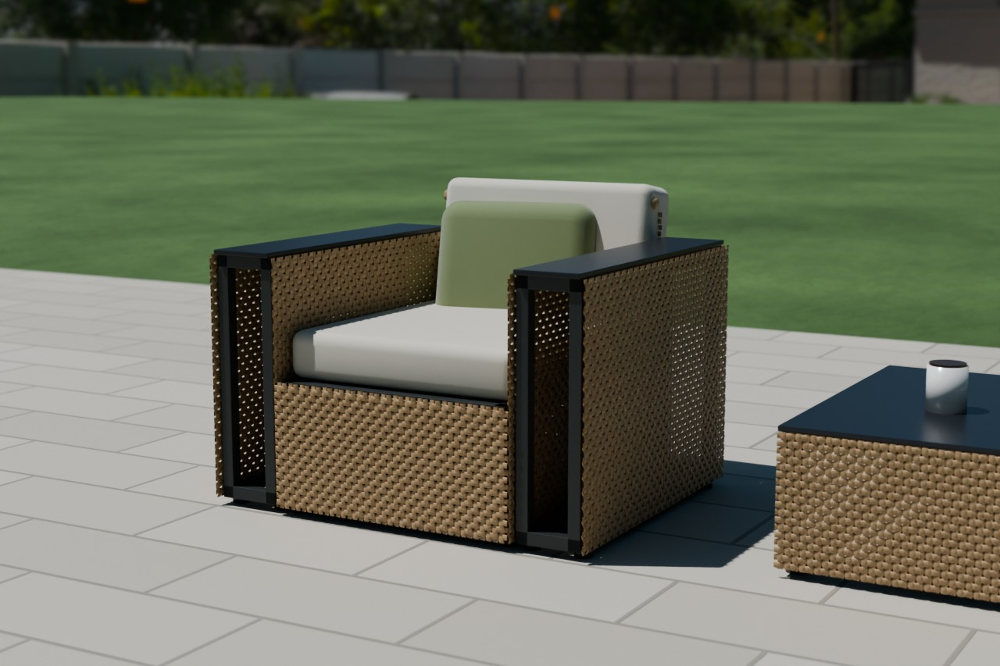
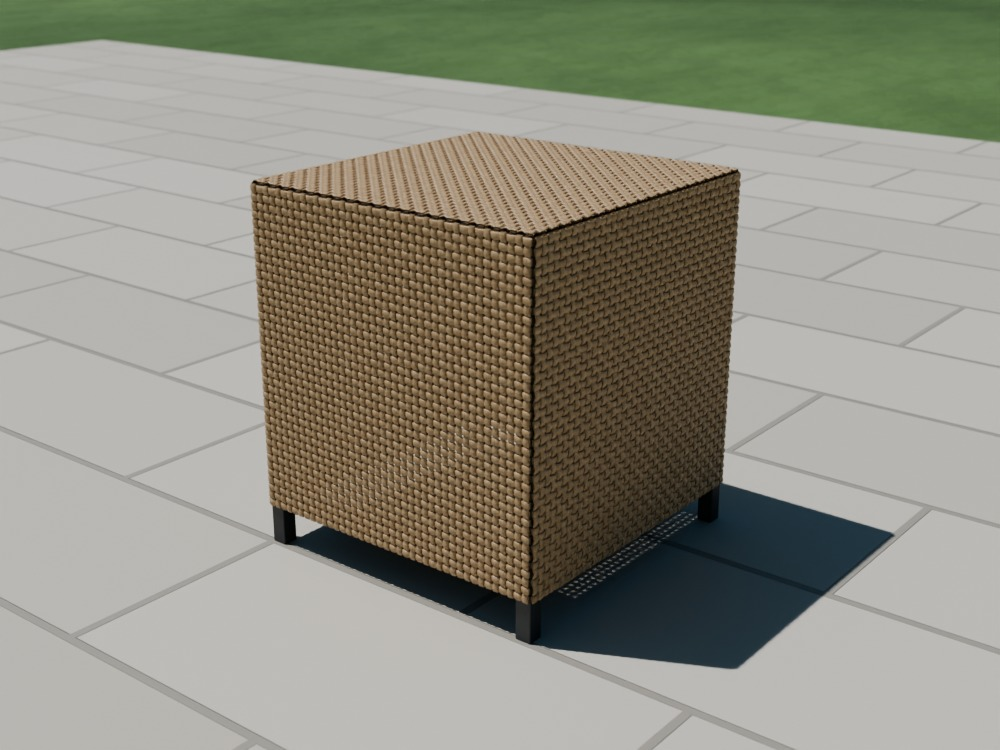
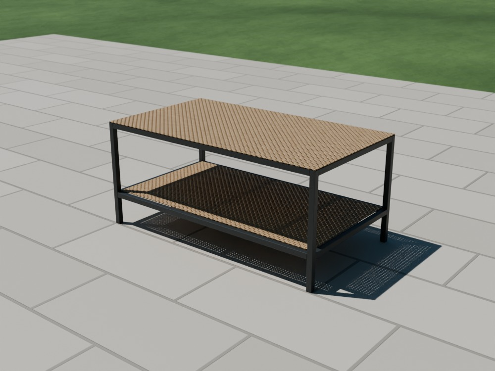
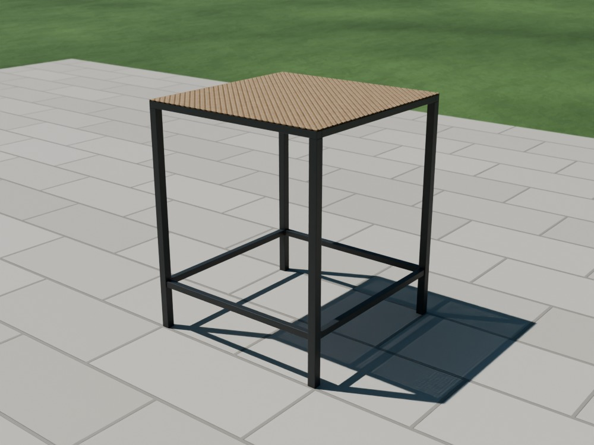
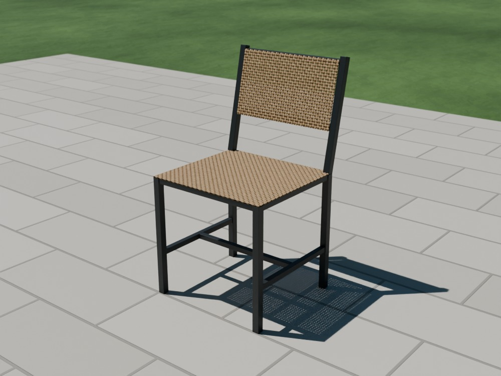
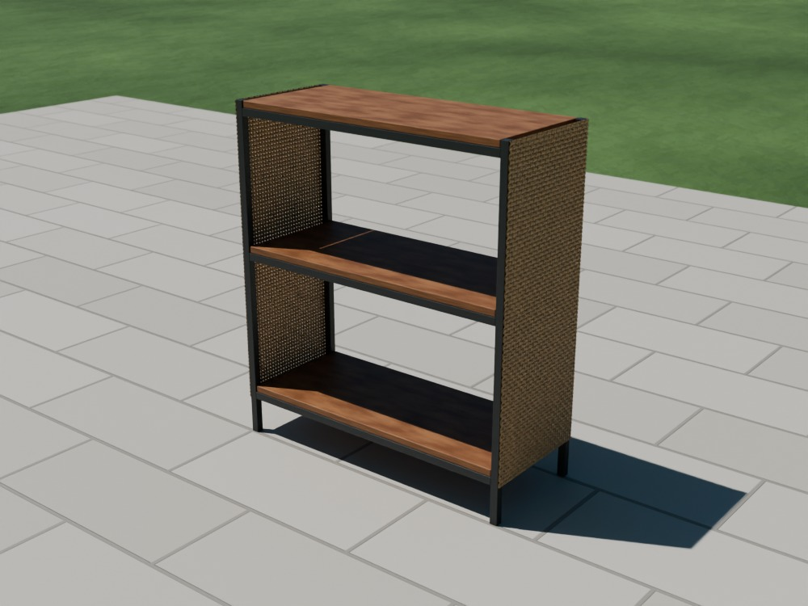
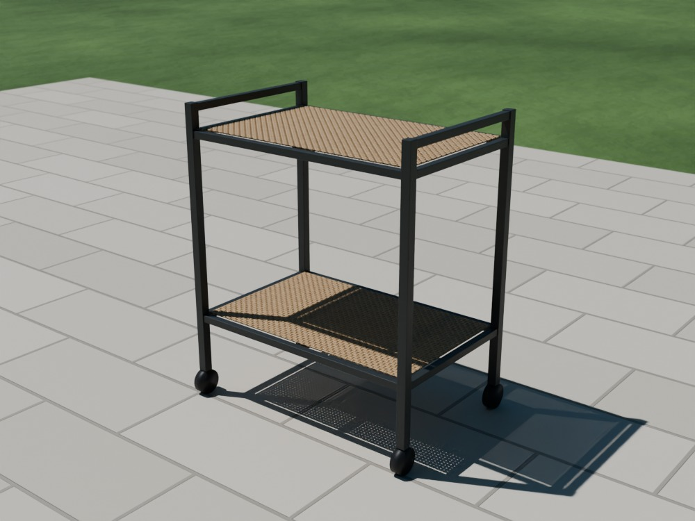
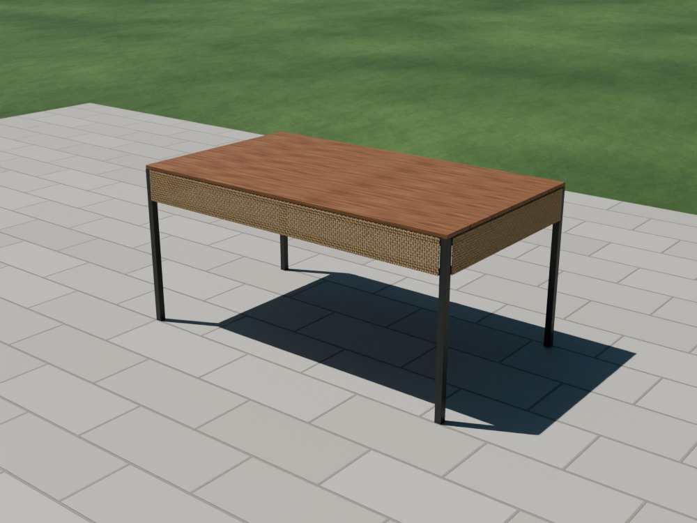
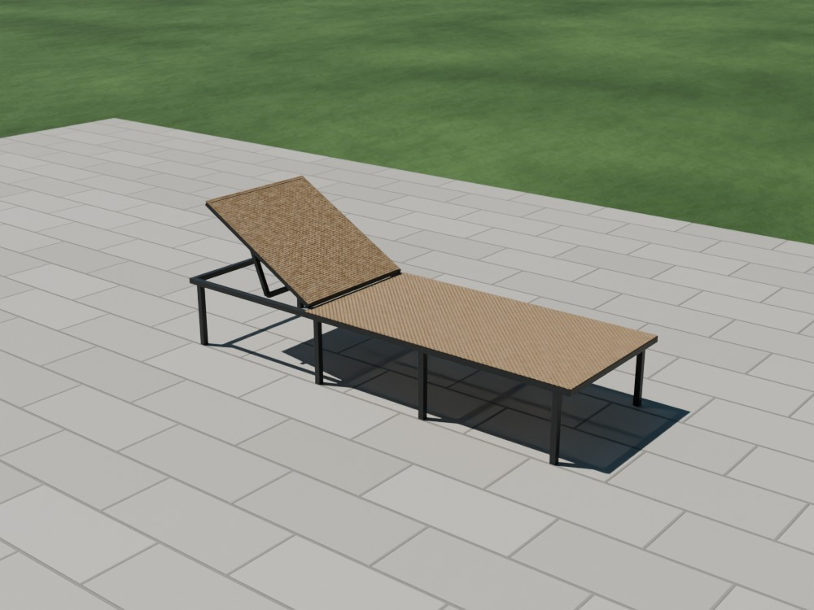

Üretim · atölye kılavuzları · Rev A, 10 Ekim 2026
Ürünler nasıl üretilir
SEKİ'nin bütün ürünleri aynı üç işle yapılıyor: profil kes, kaynat, ör. Bu sayfada ortak yöntem bir kez, sonra her ürünün kendi çizimi, kesim listesi ve yapım sırası ayrı ayrı anlatılıyor.
+ modüler oturma grubu
20, 25 ve 30'luk kutu
8 × 1,2 mm düz PE
kesme, kaynak, matkap
Kılavuzlar
Hangi ürünü yapacaksınız?
Kolaydan zora dizildi. İlk kez yapıyorsanız yan sehpa ya da saksılıkla başlayın: örgüyü küçük yüzeyde öğrenirsiniz.

RT-MODModüler oturma grubukolçak + tekli + ikili modül●●●● zor · ayrı kılavuz
YS-1Yan sehpa400 × 400 × 450 mm●○○○ çok kolay · yarım gün PF-1Puf400 × 400 × 450 mm●○○○ çok kolay · yarım gün
PF-1Puf400 × 400 × 450 mm●○○○ çok kolay · yarım gün
 SK-3Saksılık takımı50 / 40 / 30 cm küp●○○○ çok kolay · 1 gün (üçü)
SK-3Saksılık takımı50 / 40 / 30 cm küp●○○○ çok kolay · 1 gün (üçü)

OS-1Orta sehpa900 × 500 × 400 mm●●○○ kolay · 1 gün SP-1Kapaklı sepet450 × 350 × 550 mm●●○○ kolay · 1 gün
SP-1Kapaklı sepet450 × 350 × 550 mm●●○○ kolay · 1 gün

BM-1Bistro masa600 × 600 × 720 mm●●○○ kolay · 1 gün
SS-1Sandalye460 × 500 × 840 mm●●○○ kolay · 1 gün BT-1Bar taburesi420 × 420 × 750 mm●●○○ kolay · 1 gün
BT-1Bar taburesi420 × 420 × 750 mm●●○○ kolay · 1 gün

RF-1Raf800 × 320 × 900 mm●●○○ kolay · 1 gün BK-1İkili bank1200 × 500 × 840 mm●●●○ orta · 1,5 gün
BK-1İkili bank1200 × 500 × 840 mm●●●○ orta · 1,5 gün

SA-1Servis arabası700 × 450 × 820 mm●●●○ orta · 1,5 gün
YM-1Yemek masası1600 × 900 × 750 mm●●●○ orta · 2 gün KM-1Katlanır masa600 × 600 × 720 mm●●●○ orta · 1 gün
KM-1Katlanır masa600 × 600 × 720 mm●●●○ orta · 1 gün

SZ-1Şezlong1950 × 650 × 310 mm●●●● zor · 2 gün KS-1Katlanır sandalye520 × 491 × 840 mm●●●● zor · 1,5 gün
KS-1Katlanır sandalye520 × 491 × 840 mm●●●● zor · 1,5 gün
Ortak yöntem
Her üründe aynı altı iş
Aşağıdaki sıra bütün ürünler için geçerli. Ürün bölümleri yalnız o ürüne özgü olanı anlatır.
Kesin
Kesim listesindeki parçaları dayama koyarak kesin; aynı harfli parçalar birbirinin aynı olsun. Kesim ağızlarının çapağını alın.
Kaynatın
Önce düz zeminde iki yan çerçeveyi yapın, sonra onları raylarla birleştirin. Her birleşimi önce puntalayın, köşegenleri ölçün, sonra tam kaynatın.
Taşlayın ve deneyin
Şeridin değeceği bütün yüzlerde kaynak dikişini düzleyin, köşeleri eğeyle yuvarlatın. Boyadan önce ürünü yere koyun: sallanıyor mu, yük taşıyor mu?
Boyayın
En kolayı fason elektrostatik toz boya (antrasit, RAL 7016). Evde: bir kat antipas astar, iki kat dış cephe boyası, en az iki gün kuruma.
Örün
Önce çözgü, sonra atkı. Şerit uçları görünmeyen yüzde 4,2×13 matkap uçlu vidayla sabitlenir, kesilen uç çakmakla eritilir.
Bitirin
Profil uçlarına plastik tapa, varsa ahşap, minder, teker. Son kontrol: keskin kenar, açıkta kalan şerit ucu, sallanma.
İki tür örgü var
- Düz yüz (tabla, oturak, raf, sırt): dört kenarı olan bir çerçeve. Çözgü iki karşı kenarın çevresine sarılır, atkı öbür iki kenarın çevresinden dönerek bir alt bir üst geçer. Adım adım anlatımı ve çizimleri oturma grubu kılavuzunun örgü bölümünde.
- Gövde örgüsü (sehpa, puf, saksılık, sepet gibi kutular): çözgü her yüzde üst raydan alt raya sarılır. Atkı tek şeritle gövdenin çevresinde, dört dikmenin dışından dolanarak yukarı çıkar. Kenar dönüşü ve ek yeri olmadığı için düz yüzden hızlıdır.
Takım ve ortak malzeme
Takım listesi oturma grubu kılavuzundakiyle aynı: profil kesme, gazaltı kaynak, matkap, taşlama, işkence, örgü için mekik çıtası. Profiller 1,5 mm etli siyah kutu profil, şerit 8 × 1,2 mm düz, UV katkılı polietilen. Bütün ürünler için tek renk şerit ve tek renk boya (antrasit) alın.
Bu tasarımlar kâğıt üzerinde. Ölçüler hesapla çıkarıldı, ürünler henüz yapılmadı. Her ürünün ilkini deneme sayın; oturulan ve yük taşıyan ürünleri (sandalye, bank, tabure, şezlong) yük denemesinden geçirmeden satmayın.
PF-1Puf
Tabure, ayak uzatma, fazladan oturak.
Kesim listesi
| Harf | Parça | Profil | Boy (mm) | Adet | Toplam (m) |
|---|---|---|---|---|---|
| A | Dikme | 20×20×1,5 | 380 | 4 | 1,52 |
| B | Enine ray | 20×20×1,5 | 360 | 11 | 3,96 |
| 20×20 toplam | 1 boy (6 m) | 5,48 |
Diğer malzeme
- PE rattan şerit 8 × 1,2 mm düz: 190 m (≈ 1,7 kg)
- Minder 400 × 400 × 70 mm, dış mekân kumaşı, altı kaymaz
- 20×20 plastik profil tapası × 4
- Matkap uçlu vida 4,2×13 (şerit uçları), boya
Yapım sırası
Kafesi kaynatın
Yan sehpayla aynı kafes, 70 mm daha alçak. Üstte örgü yok; yerine minderi taşıyan üç ray var.
Yük deneyin
Boyadan önce üstüne oturun, bir de üstüne basın. Üst raylar esnememeli.
Gövdeyi örün
Dört yan yüz, yan sehpadaki gibi tek gövde örgüsü.
Minderi koyun
Minderin altına kaymaz kumaş ya da iki cırt bant: puf taşınırken minder düşmesin.
SK-3Saksılık takımı
Üç boy, iç içe taşınır.
Kesim listesi
| Harf | Parça | Profil | Boy (mm) | Adet | Toplam (m) |
|---|---|---|---|---|---|
| 30-A | Dikme | 20×20×1,5 | 300 | 4 | 1,20 |
| 30-B | Enine ray | 20×20×1,5 | 260 | 10 | 2,60 |
| 40-A | Dikme | 20×20×1,5 | 400 | 4 | 1,60 |
| 40-B | Enine ray | 20×20×1,5 | 360 | 10 | 3,60 |
| 50-A | Dikme | 20×20×1,5 | 500 | 4 | 2,00 |
| 50-B | Enine ray | 20×20×1,5 | 460 | 10 | 4,60 |
| 20×20 toplam | 3 boy (6 m) | 15,60 |
Diğer malzeme
- PE rattan şerit 8 × 1,2 mm düz: 640 m (≈ 5,9 kg)
- 20×20 plastik profil tapası × 12
- Saksının altına plastik tabak (su tabana akmasın)
- Matkap uçlu vida 4,2×13 (şerit uçları), boya
Yapım sırası
Üç kafesi kaynatın
Üçü de aynı yapı: 4 dikme, üstte 4 ray, altta 4 ray ve saksıyı taşıyan 2 ara ray. Üst açık kalır.
İç içe girdiğini deneyin
40'lık 50'liğin, 30'luk 40'lığın içine girmeli. Girmiyorsa kaynak çapaklarını taşlayın.
Gövdeleri örün
Üst raydan alt raya çözgü, çevresinde atkı. En küçükten başlayın, el alışsın.
Boya önemli
Saksılık sürekli ıslanır. Toz boya ya da çinko astar + boya; kaynak yerlerinde çıplak metal kalmasın.
Dikkat: Toprağı doğrudan içine doldurmayın; içine saksı konur.
YS-1Yan sehpa
Koltuğun yanına, kahvenin altına.
Kesim listesi
| Harf | Parça | Profil | Boy (mm) | Adet | Toplam (m) |
|---|---|---|---|---|---|
| A | Dikme | 20×20×1,5 | 450 | 4 | 1,80 |
| B | Enine ray | 20×20×1,5 | 360 | 9 | 3,24 |
| 20×20 toplam | 1 boy (6 m) | 5,04 |
Diğer malzeme
- PE rattan şerit 8 × 1,2 mm düz: 290 m (≈ 2,6 kg)
- 20×20 plastik profil tapası × 4 (ayak)
- İsteğe bağlı: 390 × 390 × 5 mm temperli cam
- Matkap uçlu vida 4,2×13 (şerit uçları), boya
Yapım sırası
Kafesi kaynatın
İki yan çerçeveyi (2 dikme + alt ve üst ray) düz zeminde kaynatın, sonra dört rayla birleştirin. Üst ortaya bir ray daha: üst örgü çökmesin.
Gövdeyi örün
Çözgüyü her yüzde üst raydan alt raya sarın. Atkıyı gövdenin çevresinde, dört dikmenin dışından dolanarak alttan yukarı örün.
Üstü örün
Üst yüz ayrı bir örgü: çözgü ön ve arka rayın, atkı iki yan rayın çevresinden döner.
Tapaları takın
Dikmelerin altına plastik tapa. Sehpa düz zeminde sallanmamalı.
BM-1Bistro masa
İki kişilik, sabit ayaklı.
Kesim listesi
| Harf | Parça | Profil | Boy (mm) | Adet | Toplam (m) |
|---|---|---|---|---|---|
| A | Ayak | 25×25×1,5 | 696 | 4 | 2,78 |
| B | Alt bağlantı | 20×20×1,5 | 550 | 4 | 2,20 |
| C | Tabla uzun kenarı | 20×20×1,5 | 600 | 2 | 1,20 |
| D | Tabla kısa kenarı ve kaydı | 20×20×1,5 | 560 | 3 | 1,68 |
| 20×20 toplam | 1 boy (6 m) | 5,08 | |||
| 25×25 toplam | 1 boy (6 m) | 2,78 |
Diğer malzeme
- PE rattan şerit 8 × 1,2 mm düz: 120 m (≈ 1,1 kg)
- 25×25 plastik profil tapası × 4
- İsteğe bağlı: 590 × 590 × 5 mm temperli cam
- Matkap uçlu vida 4,2×13 (şerit uçları), boya
Yapım sırası
Tabla çerçevesini kaynatın
600 × 600 mm, ortada bir kayıt. Köşegenler eşit olmalı.
Ayakları ve alt bağlantıları kaynatın
Dört ayak tabla çerçevesinin köşelerine alttan kaynar; yerden 150 mm'de dört bağlantı masayı kilitler.
Yalpayı deneyin
Masayı köşesinden itin. Yalpalıyorsa alt bağlantıların kaynağı eksiktir.
Tablayı örün
Sık ve gergin örün; bardak bu yüzeyde duracak.
BT-1Bar taburesi
Tezgâh ve yüksek masa için.
Kesim listesi
| Harf | Parça | Profil | Boy (mm) | Adet | Toplam (m) |
|---|---|---|---|---|---|
| A | Ayak | 25×25×1,5 | 740 | 4 | 2,96 |
| B | Ayak koyma rayı ve üst raylar | 20×20×1,5 | 370 | 13 | 4,81 |
| 20×20 toplam | 1 boy (6 m) | 4,81 | |||
| 25×25 toplam | 1 boy (6 m) | 2,96 |
Diğer malzeme
- PE rattan şerit 8 × 1,2 mm düz: 180 m (≈ 1,6 kg)
- 25×25 plastik profil tapası × 4
- Ayak koyma rayının üstüne 20 mm paslanmaz lama (boya aşınmasın)
- Matkap uçlu vida 4,2×13 (şerit uçları), boya
Yapım sırası
Kafesi kaynatın
Dört ayak, üç kat ray: yerden 280 mm'de ayak koyma, 560 mm'de bant altı, en üstte oturak.
Devrilmeyi deneyin
Üstüne oturup ayaklarınızı raya koyun, yana ve arkaya eğilin. 420 mm taban bu yükseklik için alt sınırdır.
Bandı ve oturağı örün
Üstteki 190 mm'lik bant gövde örgüsüyle, oturak ayrı örülür.
Dikkat: Yüksek oturak, dar taban: satmadan önce devrilme denemesini mutlaka yapın.
OS-1Orta sehpa
Oturma grubunun ortası, altı raflı.
Kesim listesi
| Harf | Parça | Profil | Boy (mm) | Adet | Toplam (m) |
|---|---|---|---|---|---|
| A | Dikme | 20×20×1,5 | 400 | 4 | 1,60 |
| B | Enine ray | 20×20×1,5 | 860 | 4 | 3,44 |
| C | Boyuna ray | 20×20×1,5 | 460 | 7 | 3,22 |
| 20×20 toplam | 2 boy (6 m) | 8,26 |
Diğer malzeme
- PE rattan şerit 8 × 1,2 mm düz: 290 m (≈ 2,6 kg)
- 20×20 plastik profil tapası × 4
- İsteğe bağlı: 880 × 480 × 6 mm temperli cam, altına şeffaf damla ped
- Matkap uçlu vida 4,2×13 (şerit uçları), boya
Yapım sırası
Kafesi kaynatın
İki uzun yan çerçeve (dikmeler + üst ray + raf rayı), sonra kısa raylar. Üstte iki, rafta bir ara ray var.
Köşegenleri ölçün
900 mm'lik çerçevede 2 mm sapma gözle görülür. Üstten iki köşegen eşit olmalı.
Üst tablayı örün
Çözgü kısa yönde (500), atkı uzun yönde (900). Ara rayların üstünden geçerken şeridi germeyin.
Rafı örün
Raf dikmelerin arasında kalır; atkı raf raylarının çevresinden döner.
Dikkat: Sehpanın üstüne çıkılır diye düşünün: ortasına 80 kg koyup deneyin.
RF-1Raf
Ayakkabılık, çiçeklik, balkon rafı.
Kesim listesi
| Harf | Parça | Profil | Boy (mm) | Adet | Toplam (m) |
|---|---|---|---|---|---|
| A | Dikme | 20×20×1,5 | 900 | 4 | 3,60 |
| B | Raf uzun rayı | 20×20×1,5 | 760 | 6 | 4,56 |
| C | Raf kısa rayı | 20×20×1,5 | 280 | 6 | 1,68 |
| 20×20 toplam | 2 boy (6 m) | 9,84 |
Diğer malzeme
- PE rattan şerit 8 × 1,2 mm düz: 180 m (≈ 1,7 kg)
- Raf tahtası 756 × 316 × 18 mm × 3 (sert ağaç ya da su kontrplağı), köşeleri dikmeye göre 20 × 20 çentikli
- Ahşap vidası 4×16 × 12 (rafı alttan tutar)
- 20×20 plastik profil tapası × 8
- Matkap uçlu vida 4,2×13 (şerit uçları), boya
Yapım sırası
İki yan çerçeveyi kaynatın
İki dikme ve üç kısa ray. Örgü bu çerçevelere yapılacak.
Uzun raylarla birleştirin
Her rafta önde ve arkada birer uzun ray. Raf duvara dayanacaksa arkaya çapraz bir lama ekleyin.
Yanları örün
Çözgü üst raydan alt raya, atkı iki dikmenin çevresinde. Orta ray örgünün arkasında kalır.
Rafları takın
Tahtaları yağlayın ya da vernikleyin, rayların üstüne koyup alttan vidalayın.
Dikkat: Yüksek ve dar: çocuklu evde duvara sabitleme vidası için arka üst raya iki delik açın.
SP-1Kapaklı sepet
Minder, oyuncak, çamaşır.
Kesim listesi
| Harf | Parça | Profil | Boy (mm) | Adet | Toplam (m) |
|---|---|---|---|---|---|
| A | Dikme | 20×20×1,5 | 525 | 4 | 2,10 |
| B | Enine ray | 20×20×1,5 | 410 | 4 | 1,64 |
| C | Boyuna ray | 20×20×1,5 | 310 | 9 | 2,79 |
| D | Kapak uzun kenarı | 20×20×1,5 | 450 | 2 | 0,90 |
| 20×20 toplam | 2 boy (6 m) | 7,43 |
Diğer malzeme
- PE rattan şerit 8 × 1,2 mm düz: 380 m (≈ 3,5 kg)
- Paslanmaz mobilya menteşesi 50 mm × 2 + M4 perçin somun × 8
- 20×20 plastik profil tapası × 4
- İsteğe bağlı: kapak tutucu zincir ya da gazlı amortisör
- Matkap uçlu vida 4,2×13 (şerit uçları), boya
Yapım sırası
Gövde kafesini kaynatın
Tabanda iki ara ray var; taban örgüsü bunların üstüne oturur.
Kapak çerçevesini kaynatın
450 × 350 mm, ortada bir kayıt. Gövdenin üstüne koyun, dört kenar hizalı olmalı.
Menteşe yerlerini delin
Kapak gövdenin üstündeyken arka kenara iki menteşeyi işaretleyin, M4 perçin somun çakın. Boyadan sonra takılacak.
Örün
Önce taban (içeriden), sonra gövde, en son kapak. Kapakta şeridi menteşe yerlerinde iki yandan geçirin.
Dikkat: Çocuk kullanacaksa kapağın kendiliğinden kapanmasını engelleyen bir tutucu takın.
SS-1Sandalye
Katlanmayan, hafif, sağlam.
Kesim listesi
| Harf | Parça | Profil | Boy (mm) | Adet | Toplam (m) |
|---|---|---|---|---|---|
| A | Ön ayak | 25×25×1,5 | 445 | 2 | 0,89 |
| B | Arka ayak | 25×25×1,5 | 445 | 2 | 0,89 |
| C | Sırt dikmesi (alt ucu 6° açılı) | 25×25×1,5 | 404 | 2 | 0,81 |
| D | Oturak ön ve arka rayı | 20×20×1,5 | 410 | 4 | 1,64 |
| E | Yan ray (oturak ve alt bağlantı) | 20×20×1,5 | 370 | 5 | 1,85 |
| F | Alt orta bağlantı | 20×20×1,5 | 415 | 1 | 0,41 |
| 20×20 toplam | 1 boy (6 m) | 3,91 | |||
| 25×25 toplam | 1 boy (6 m) | 2,59 |
Diğer malzeme
- PE rattan şerit 8 × 1,2 mm düz: 110 m (≈ 1,0 kg)
- 25×25 plastik profil tapası × 6 (ayak altı ve dikme üstü)
- 3 mm sacdan köşe takviyesi × 2 (arka ayak–sırt birleşimi)
- Matkap uçlu vida 4,2×13 (şerit uçları), boya
Yapım sırası
Yan çerçeveleri şablonda kaynatın
Suntaya yan görünüşü bire bir çizin. Ön ayak, arka ayak, sırt dikmesi (arka ayağın üstünden 12° geriye), oturak yan rayı ve alt yan ray. İkinci yanı birincinin üstünde yapın.
Sırt birleşimini güçlendirin
Sırt dikmesi arka ayağa alın alına kaynar. İç köşeye 3 mm sacdan üçgen takviye kaynatın: yaslanan kişinin kuvveti buradan geçer.
Yanları birleştirin
Oturak ön ve arka rayı, iki sırt rayı, alt orta bağlantı ve oturak orta kaydı. Dört ayak yere aynı anda basmalı.
Yük deneyin
Boyadan önce: oturağa 150 kg, sırta bütün gücüyle yaslanma, sandalyeyi arka iki ayağı üstünde sallama.
Örün
Oturak: çözgü öne-arkaya, atkı yanlara; panellerden daha gergin. Sırt: iki rayın ve iki dikmenin çevresinde.
Dikkat: Oturak yük taşır: 100 kg altında 20 mm'den fazla çökmemeli. Çökerse çözgüyü çift kat sarın.
BK-1İkili bank
İki kişilik, sırtlı.
Kesim listesi
| Harf | Parça | Profil | Boy (mm) | Adet | Toplam (m) |
|---|---|---|---|---|---|
| A | Ön ayak | 25×25×1,5 | 445 | 3 | 1,33 |
| B | Arka ayak | 25×25×1,5 | 445 | 3 | 1,33 |
| C | Sırt dikmesi (alt ucu 6° açılı) | 25×25×1,5 | 404 | 3 | 1,21 |
| D | Oturak ön ve arka rayı | 20×20×1,5 | 562 | 8 | 4,50 |
| E | Yan ray (oturak ve alt bağlantı) | 20×20×1,5 | 370 | 8 | 2,96 |
| F | Alt orta bağlantı | 20×20×1,5 | 568 | 2 | 1,14 |
| 20×20 toplam | 2 boy (6 m) | 8,59 | |||
| 25×25 toplam | 1 boy (6 m) | 3,88 |
Diğer malzeme
- PE rattan şerit 8 × 1,2 mm düz: 280 m (≈ 2,5 kg)
- 25×25 plastik profil tapası × 9
- 3 mm sacdan köşe takviyesi × 3
- Matkap uçlu vida 4,2×13 (şerit uçları), boya
Yapım sırası
Üç yan çerçeve kaynatın
Sandalyenin yan çerçevesinin aynısından üç tane: iki uç, bir orta. Aynı şablondan çıkarın.
Düz zeminde birleştirin
Üç çerçeveyi raylarla bağlayın. 1200 mm'de burulma kolay olur: altı ayağın altı da yere basmalı.
Yük deneyin
İki kişi oturup birlikte arkaya yaslansın. Orta çerçeve yükün yarısını taşır; kaynağına iyi bakın.
Örün
İki göz ayrı ayrı örülür; orta dikmede şerit dönüşleri yan yana gelir.
Dikkat: Orta ayaksız yapmayın: 1200 mm'lik oturak rayı iki kişiyi taşımaz.
KM-1Katlanır masa
Tabla iner, masa duvara yaslanır.
Bu ürünün ayrı, ayrıntılı kılavuzu var: mekanizma, şablon noktaları, kesim listesi ve yük testleri için katlanır sandalye ve masa kılavuzuna gidin.
SA-1Servis arabası
İki raflı, tekerlekli.
Kesim listesi
| Harf | Parça | Profil | Boy (mm) | Adet | Toplam (m) |
|---|---|---|---|---|---|
| A | Dikme | 25×25×1,5 | 750 | 4 | 3,00 |
| B | Raf uzun rayı | 20×20×1,5 | 650 | 4 | 2,60 |
| C | Raf kısa rayı, kayıt ve tutamak | 20×20×1,5 | 400 | 8 | 3,20 |
| 20×20 toplam | 1 boy (6 m) | 5,80 | |||
| 25×25 toplam | 1 boy (6 m) | 3,00 |
Diğer malzeme
- PE rattan şerit 8 × 1,2 mm düz: 180 m (≈ 1,7 kg)
- Frenli döner teker Ø70 mm, M8 saplı × 4 (ikisi frenli)
- 25×25 M8 dişli profil tapası × 4
- 25×25 plastik profil tapası × 4 (dikme üstü)
- Matkap uçlu vida 4,2×13 (şerit uçları), boya
Yapım sırası
İki yan çerçeveyi kaynatın
Kısa yanlar: iki dikme, iki raf rayı ve üstte tutamak rayı.
Uzun raylarla birleştirin
Her rafta iki uzun ray ve ortada bir kayıt. Dikmeler rafın 70 mm üstüne taşar, kenarlık olur.
Tekerleri deneyin
Dişli tapaları çakın, tekerleri takın. Dört teker yere basmalı, araba kendi kendine yürümemeli.
Rafları örün
Raflar dikmelerin arasında kalır. Bardak taşıyacak: sık ve gergin.
YM-1Yemek masası
Altı kişilik, ahşap tablalı, örgü etekli.
Kesim listesi
| Harf | Parça | Profil | Boy (mm) | Adet | Toplam (m) |
|---|---|---|---|---|---|
| A | Ayak | 30×30×1,5 | 732 | 4 | 2,93 |
| B | Uzun üst ray | 30×30×1,5 | 1540 | 2 | 3,08 |
| C | Kısa üst ray ve kayıt | 30×30×1,5 | 840 | 4 | 3,36 |
| D | Uzun etek rayı | 20×20×1,5 | 1540 | 2 | 3,08 |
| E | Kısa etek rayı | 20×20×1,5 | 840 | 2 | 1,68 |
| 20×20 toplam | 1 boy (6 m) | 4,76 | |||
| 30×30 toplam | 2 boy (6 m) | 9,37 |
Diğer malzeme
- PE rattan şerit 8 × 1,2 mm düz: 250 m (≈ 2,3 kg)
- Tabla: 147 × 1600 × 18 mm sert ağaç × 6 (iroko, tik ya da ısıl işlemli dişbudak), aralarında 3 mm
- Ahşap vidası 4×35 × 36 (üst raylardan yukarı, alttan)
- 30×30 M8 dişli tapa + ayarlı ayak × 4
- Ahşap koruyucu yağ
- Matkap uçlu vida 4,2×13 (şerit uçları), boya
Yapım sırası
İki uzun yan çerçeveyi kaynatın
İki ayak, üst ray ve 132 mm aşağıda etek rayı. 1600 mm'de düzlüğü iple kontrol edin.
Kısa raylarla birleştirin
Uçlarda üst ve etek rayı, ortada iki kayıt. Köşegenler eşit olmalı.
Yalpayı deneyin
Masayı köşesinden itin. Etek rayları masayı kilitler; yalpa varsa ayak–ray kaynaklarına bakın.
Etekleri örün
Dört kenarda 142 mm'lik bant: çözgü üst ray ile etek rayının çevresinden, atkı gövdenin çevresinde döner.
Tablayı döşeyin
Altı tahta, aralarında 3 mm su boşluğu. Üst rayları alttan delip tahtaları alttan vidalayın, üstte vida görünmesin.
Dikkat: Masa takımı altı sandalye ister: SS-1'den altı tane, hepsi aynı şablondan.
KS-1Katlanır sandalye
Oturak kalkar, ayaklar birbirine yatar.
Bu ürünün ayrı, ayrıntılı kılavuzu var: mekanizma, şablon noktaları, kesim listesi ve yük testleri için katlanır sandalye ve masa kılavuzuna gidin.
SZ-1Şezlong
Sırtı üç kademe ayarlı.
Kesim listesi
| Harf | Parça | Profil | Boy (mm) | Adet | Toplam (m) |
|---|---|---|---|---|---|
| A | Uzun ray | 25×25×1,5 | 1950 | 2 | 3,90 |
| B | Ayak | 25×25×1,5 | 280 | 8 | 2,24 |
| C | Enine ray | 25×25×1,5 | 600 | 4 | 2,40 |
| D | Yatak kaydı | 20×20×1,5 | 575 | 1 | 0,57 |
| D2 | Yatak kaydı | 20×20×1,5 | 612 | 1 | 0,61 |
| E | Sırt çerçevesi boyuna | 20×20×1,5 | 680 | 3 | 2,04 |
| F | Sırt çerçevesi enine | 20×20×1,5 | 560 | 2 | 1,12 |
| G | Destek ayağı | 20×20×1,5 | 247 | 2 | 0,49 |
| H | Destek ayağı bağlantısı | 20×20×1,5 | 530 | 1 | 0,53 |
| 20×20 toplam | 1 boy (6 m) | 5,37 | |||
| 25×25 toplam | 2 boy (6 m) | 8,54 |
Diğer malzeme
- PE rattan şerit 8 × 1,2 mm düz: 420 m (≈ 3,8 kg)
- M8×50 cıvata + fiberli somun × 4 (sırt menteşesi ve destek ayağı)
- Kademe laması: 30×4 lama 250 mm × 2, üçer çentikli
- 25×25 plastik profil tapası × 12
- İsteğe bağlı: 1900 × 600 × 50 mm şezlong minderi
- Matkap uçlu vida 4,2×13 (şerit uçları), boya
Yapım sırası
Ana çerçeveyi kaynatın
İki uzun ray (1950), dört enine ray, sekiz ayak. Baş tarafındaki 700 mm'lik bölüm boş kalır; sırt oraya yatar.
Sırt çerçevesini kaynatın
680 × 600 mm, üç boyuna ve iki enine çubuk. Alt uçlarından M8 cıvatayla ana çerçevedeki ikinci enine rayın önüne menteşelenir.
Destek ayağını ve kademe lamalarını yapın
U biçimli destek ayağı sırtın ortasına cıvatalı, serbest döner. Uzun rayların iç yüzüne üçer çentikli lama kaynatın: ayak hangi çentiğe oturursa sırt o açıda kalır.
Yük deneyin
Yatağın ortasına oturun (en zayıf yer), sonra uzanıp sırta yaslanın. Her üç kademede destek ayağı çentikten atmamalı.
Örün
Yatak 1250 × 650 mm: bu serinin en büyük örgüsü, iki kişiyle yapın. Sırt ayrı örülür.
Dikkat: Sırt inerken destek ayağı ile ray arası parmak sıkıştırır; satışta uyarı etiketi koyun.
Dikkat: Bu serinin en zor ürünü. Sandalye ve bankı yapmadan başlamayın.